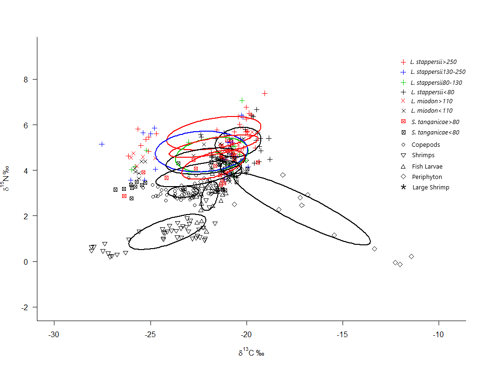

International collaboration to help ensure sustainable fisheries in Lake Tanganyika, accounting for climate changes and overfishing, social aspects and capacity building in the region. I was a part of workpackage 3, ‘Fish productivity’, but also partook in annual meetings, discussion and planning amongst other workgroups. For more info, please click here.

Dietary differences among commercially important fishes in Lake Tanganyika assessed using stable isotope analysis
Article form of my master’s thesis. Aimed at estimating the pelagic food web of Lake Tanganyika in East Africa, to aid further modelling within the CLEAT project. The focus was on the three species Lates stappersii, Limnothrissa miodon and Stolothrissa tanganicae, using stable isotope analysis supplemented by a stomach analysis of Lates stappersii.
The pelagic fishery of Lake Tanganyika, which is largely made up of the three species Lates stappersii, Limnothrissa miodon and Stolothrissa tanganicae, has been declining, and there are disagreements as to the primary underlying cause. Because of this, detailed knowledge of the systems food web is required. The aim of this study is to elucidate the diets of the three species. Muscle tissue samples for stable isotope analysis were sampled from February through April, along with supplementary stomachs from L. stappersii, for use in stomach analysis. The stomach analysis showed a change in diet composition throughout the life cycle of the fish, shifting from copepods, to fish larvae supplemented by shrimps, to whole fish prey as the fish grew. Stable carbon and nitrogen isotope values from fish muscle were consistent with this, and furthermore showed no differences between the species when sizes were accounted for. This suggests that the diet of the pelagic fish species is a function of size, rather than species. Fish below 80mm total length were likely to consume primarily copepods, supplemented by shrimps. Around 80mm a shift to primarily feeding on fish larvae, still supplemented by shrimps and/or copepods, was observed. In the case of L. stappersii, the fish grow large enough to consume whole fish when they reach a total length of 250mm, after which whole fish, namely S. tanganicae, compose the majority of the food consumed.
Seasonal variation in growth of pelagic fish species of Lake Tanganyika.
Testing the difference in growth of three pelagic fish species in Lake Tanganyika between the wet and dry season. This knowledge will aid in modelling of the species response to a warmin climate, and aid management in the long run. Growth estimates are based on counts of daily increments in otoliths of all three species.
Latitudinal differences in the Diet of Northern Sand Lance, Ammodytes dubius.
Using stomach analysis to estimate the relative importance of various food items between two populations of Northern Sand Lance, along the western coast of Greenland.
The schooling pelagic forage fish Northern sand lance, Ammodytes dubius, is an important species in the northern atlantic, due to its role in linking the lower and higher trophic levels, allowing the energy produced by the planktonic species to reach seabirds and higher mammals. Knowledge of sand lance diet composition in the arctic is, however, lacking. This study examines differences in sand lance diet at 2 latitudes off the western coast of Greenland, by analyzing their stomach content. Results indicate that amphipods and copepods were the main food subjects, contributing roughly 98% of total carbon consumed. Amphipods contribute up towards 40% of carbon consumed at the southern location, whilst being neglectible in the northern station, where copepods make up virtually all food consumed. The copepod species, Calanus finmarchicus, C. glacialis and C. hyperboreus were the primary food items, with C. hyperboreus being more important at the northern station, and C. finmarchicus and C. glacialis dominating the southern station diet composition. This information may improve modelling of sand lance response to climate change, by allowing models to account for the spatial variability in importance of prey species.
A comparison of species and temperature responses of growth and photosynthesis for four riparian paludiculture plants
Testing several wetland plants in regards to their ability to produce biomass under different temperatures. The purpose was to assess their suitability as paludiculture crops, which allow for more wetland area whilst minimizing the economic loss of agricultural area.
Riparian plants, suitable for peatland cultivation, has been investigated in relation to their ability to produce biomass at different temperatures. The plants investigated were Salix viminalis, Pennisetum purpureum, Arundo donax and Phragmites australis. Individuals of each species were kept in climate chambers at either 20 or 30 °C for 21 days, after which chosen physiological traits were measured. Pigment content (chlorophyll and carotenoids) and ratio changed with both species and temperature, with P. australis containing the most chlorophyll. Pmax was highest for P. australis, and temperature impacted species differently. Phragmites australis and S. viminalis acclimated to 20 °C increased their Pmax drastically when measured at 30 °C. The highest relative growth rate (RGR) was found in P. australis and A. donax at both temperatures, and temperature appeared to increase the growth rate. A significant relationship was found between RGR, and both chlorophyll content of leaves and Pmax, but no relationship was found between RGR and SLA. In terms of overall suitability for paludiculture, P. australis seemed the best, as it had the highest RGR, Pmax and chlorophyll content, while also exhibiting great adaptability to varying temperatures, a trait that might prove desirable in temperate regions.